EKOS reads a compiled .NET library it has never seen the source of, recovers what every method does, and a Python rewrite is written from that. The rewrite is then checked against the running original and produces byte-identical output. Below is every step, with the real screen for each.
MarkdownSharp is the Markdown engine that powered Stack Overflow. It is a text-to-HTML function with no files, network or database, so "same results" means identical bytes. It leans on regular expressions, which is where a port most easily goes wrong.
MarkdownSharp 2.0.5 (MIT), a 51 KB compiled .NET assembly. No repository, no source. Only its string constants are readable.
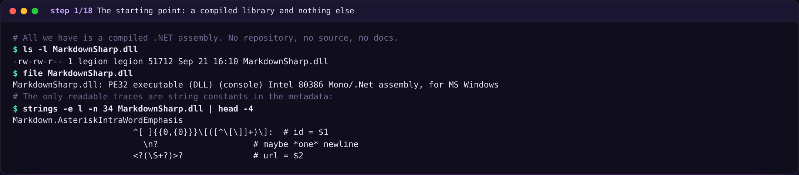
A 12-line harness calls new Markdown().Transform(text). It runs on wine-mono, with no .NET SDK installed.
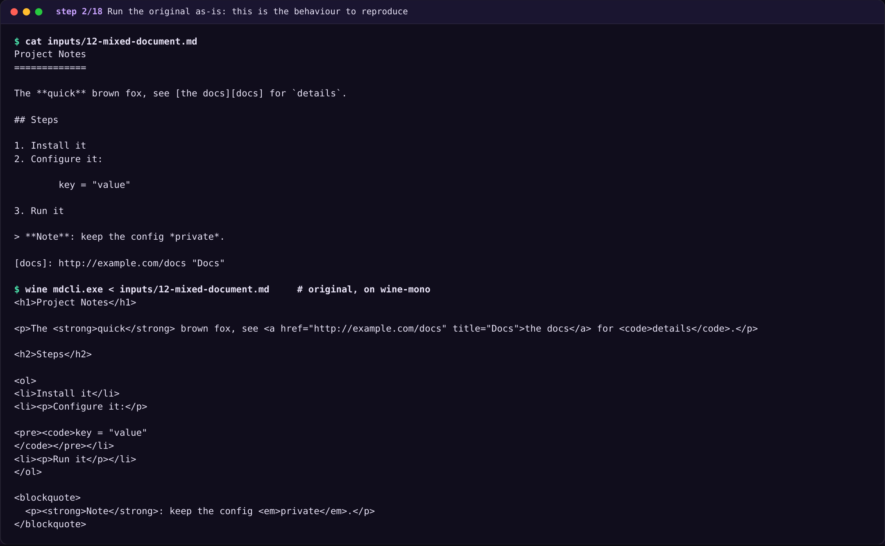
ekos build reads the bytesThe assembly is parsed, never executed. It becomes a content-addressed artifact.
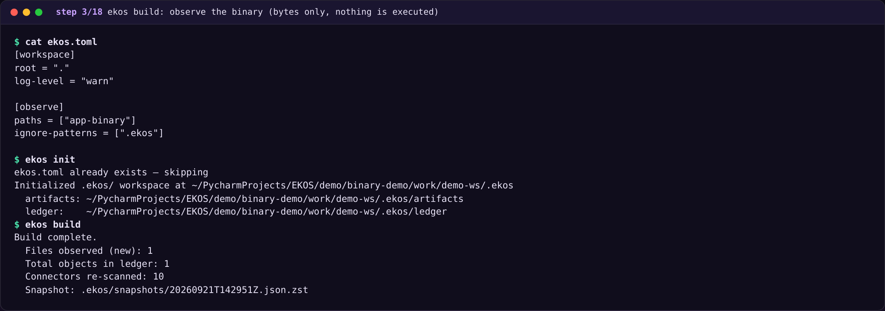
A hand-written CIL decoder builds control-flow graphs and structures them into if/loop/switch/try statements. No LLM key was set, so none was used.
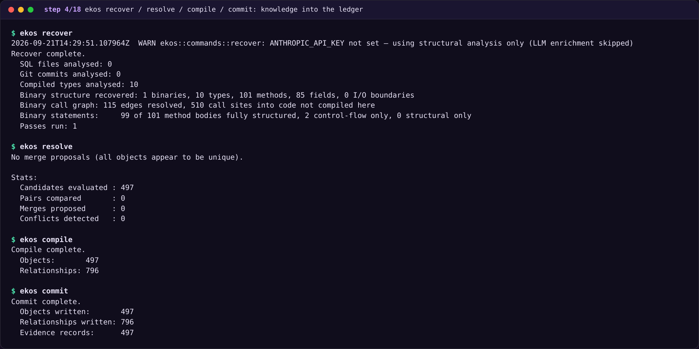
Types, methods and the call graph are evidence-backed objects in the append-only ledger.
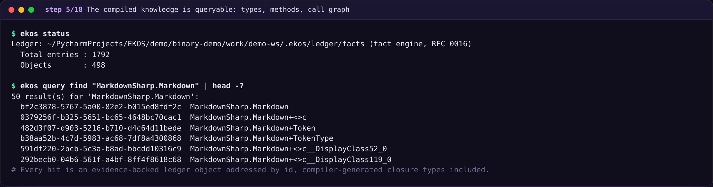
ekos_binary_explain over MCP, the same server an AI agent uses. Callees come first, so every port step only depends on finished work.
Recovered pseudo-code, all types
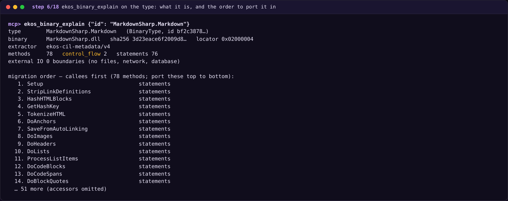
Every recovered line cites its IL offset. Regexes and replacement templates arrive as exact constants.
Recovered pseudo-code, all types
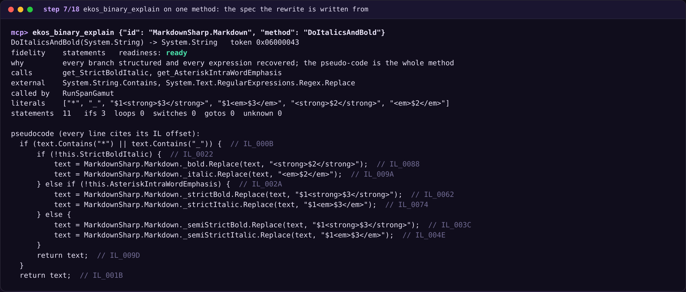
Normalize is control_flow with one unstructured goto. EKOS marks it partial and tells the porter not to guess. Two of 101 methods are in this state.
Recovered pseudo-code, all types
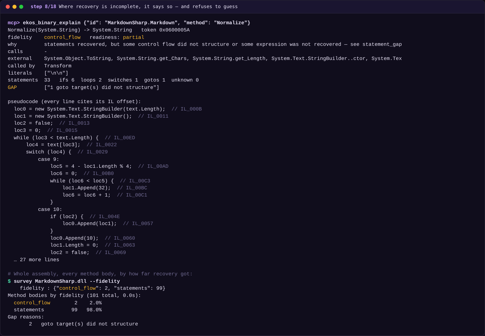
Written callees-first from the recovered statements. Long regex literals were lifted from the spec by a script, and every method cites its token.
Recovered pseudo-code, all types · Python rewrite: markdown.py · _literals.py · __main__.py
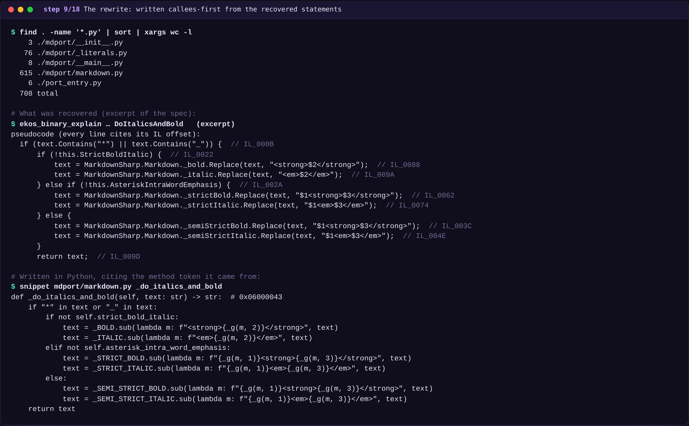
Evidence, not a verdict. It caught the config-file constructor that was left out on purpose. The rest are constants that moved files.
Python rewrite: markdown.py · _literals.py · __main__.py
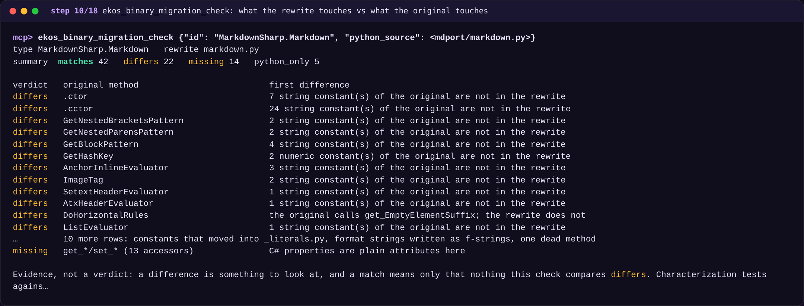
Five escape attempts, all blocked. The probe was itself validated by running it unsandboxed, where all five succeed.
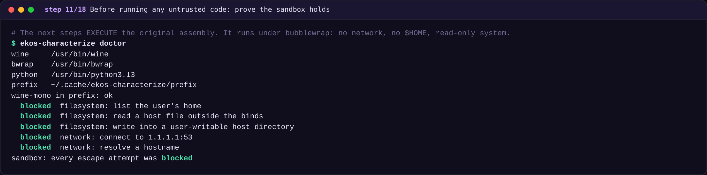
The original runs once in the sandbox and its results become a golden file. The check needs only Python.
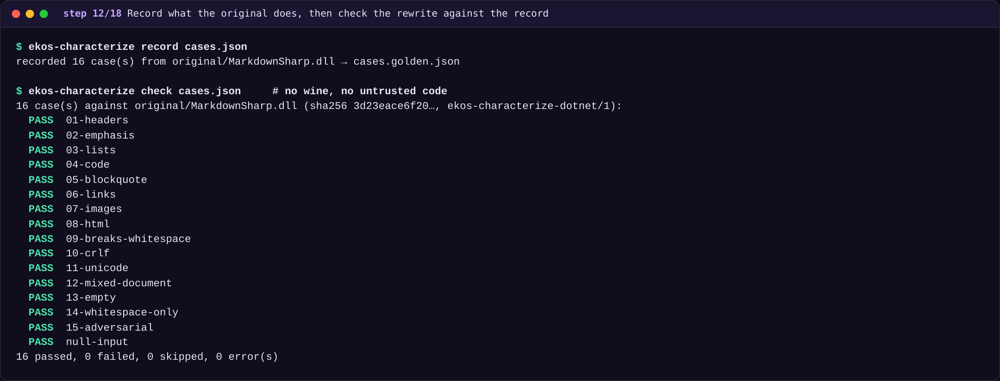
wine mdcli.exe against python -m mdport. Identical sha256 on all 15 fixtures.
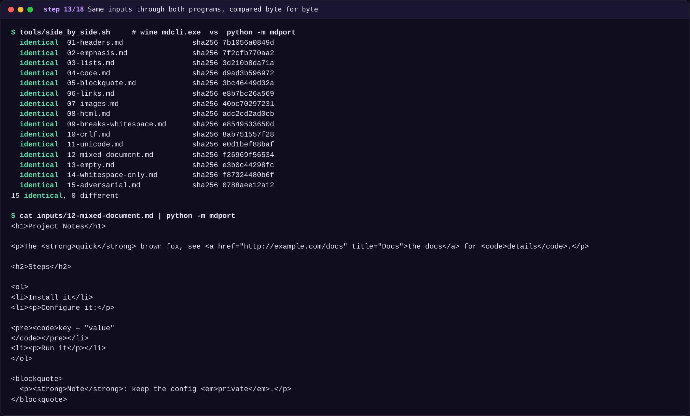
The HTML of both programs rendered in a browser. Identical output, not just similar-looking output.
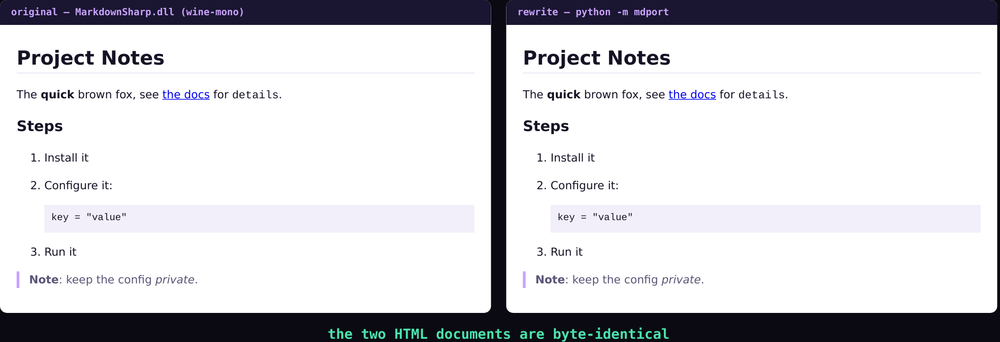
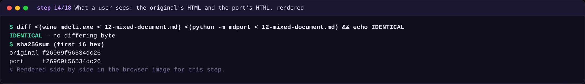
Identical on every one. To show the fuzzer can fail, one regex flag was removed from a copy of the port. It found 44 differences in 300 documents.
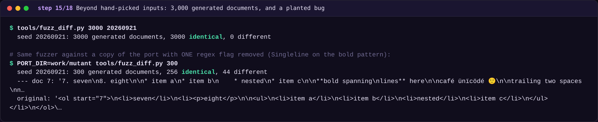
The original builds System.Random for email obfuscation. The spec shows it, so the port is random too, and the comparison decodes entities.
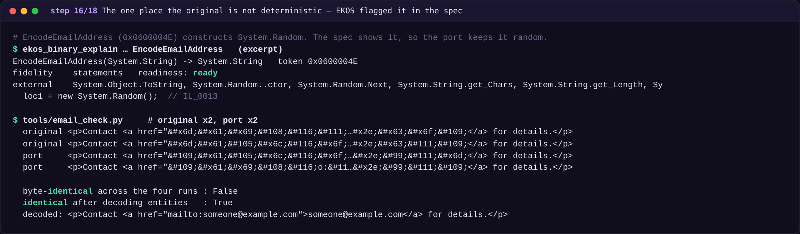
| Step | What EKOS did here | What you would do without it |
|---|---|---|
| Read the binary | In-process CIL decoder, control-flow graphs, structuring: 101 method bodies, 99 as full statements. No SDK, nothing executed. | A PE file is not text an LLM can read. You need a decompiler first, and its output has no per-line evidence. |
| Constants | 37 regex and format literals, 12,009 characters, delivered verbatim and copied into the port by a script. | Recall or retype them. One wrong character in a verbose regex changes behaviour and nothing complains. |
| Evidence | Every statement cites its IL offset; every fact is a ledger object with provenance. | Claims about what a method does cannot be traced back to anything. |
| Gaps | 2 methods marked control_flow / partial, with "do not fill the gaps by guessing". | A model fills a gap with plausible code, and nobody sees where. |
| Order | Migration order, callees first, for all 78 methods of the type. | Ad hoc, and easy to port a caller before what it depends on. |
| Verify | Static check, sandboxed record of the original, replay against the port, and a fuzz that caught a planted bug. | "Looks right" review of code that was never compared to the running original. |
\z vs \Z, variable-width lookbehind, atomic groups need Python 3.11+, options are integers in the IL. None of these show in a plain read of the code. Tests found them.Two mature generic libraries against the original's output. This is a proxy, not an LLM run. It shows how far Markdown the concept is from this program.
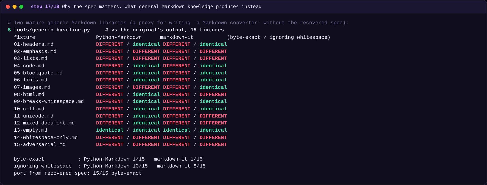
Numbers come from the frames, not from this page.
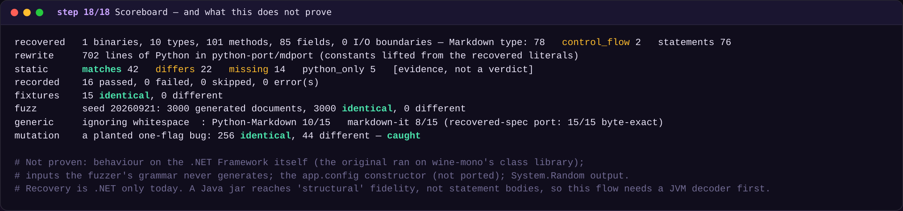
# runs all 18 stages, real commands, writes frames/NN-*.txt $ demo/binary-demo/run_demo.sh # renders each frame to a PNG (and the browser comparison) $ python3 demo/binary-demo/capture.py # later: string the frames into a GIF or video $ demo/binary-demo/tools/make_gif.sh 3
The code: Recovered pseudo-code, all types · Python rewrite: markdown.py · _literals.py · __main__.py